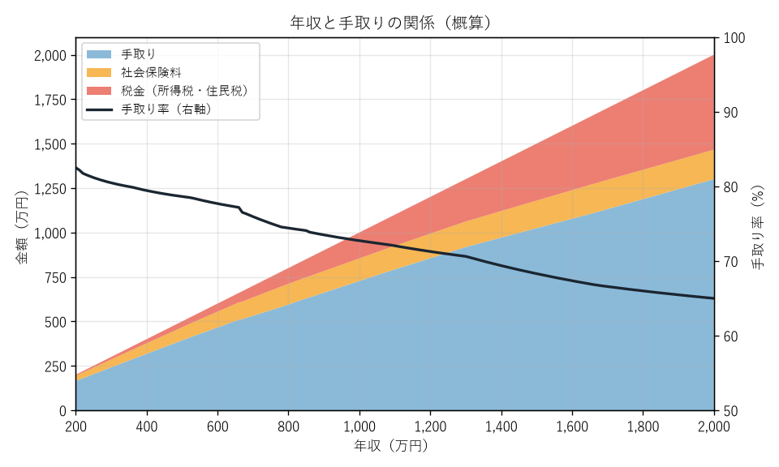

第 2 章 税金と社会保険の全体像
この章では、個別の制度に入る前に、税金と社会保険がそれぞれどのような目的を持ち、どのように分類されるのかを整理する。最後に、会社員の給与明細を例に、額面の給与から手取りが決まるまでの流れを確認する。
税金と社会保険の違い
税金も社会保険料も、国や地方公共団体などに支払うお金である点は共通している。しかし、その性格は大きく異なる。
観点 |
税金 |
社会保険料 |
|---|---|---|
目的 |
道路・教育・警察・防衛など、公共サービス全般の財源 |
病気・老後・失業・介護などのリスクに備える保険の財源 |
支払と給付の関係 |
納めた額と受けるサービスの間に直接の対応関係はない |
保険料を納めることで、給付を受ける権利が生じる |
決まり方 |
所得・消費・財産などに応じて法律で定める |
主に給与や所得に料率を掛けて計算する |
主な納付先 |
国（税務署）、都道府県、市区町村 |
健康保険組合、全国健康保険協会、日本年金機構、市区町村など |
社会保険料は「保険」であるため、納めていないと必要なときに給付を受けられないことがある。たとえば国民年金の保険料を長期間納めていないと、将来の年金が減るだけでなく、障害年金を受けられない場合もある。一方で、税金と同様に法律で加入と納付が義務付けられており、自分の意思で加入をやめることはできない。
税金の分類
日本には 50 種類近くの税金がある。主なものを、課税する主体（国か地方か）と、納め方（直接か間接か）で分類すると次のようになる。
区分 |
直接税 |
間接税 |
|---|---|---|
国税 |
所得税、法人税、相続税、贈与税 |
消費税、酒税、たばこ税、印紙税 |
地方税 |
住民税、個人事業税、固定資産税、自動車税 |
地方消費税、地方たばこ税、ゴルフ場利用税 |
- 直接税
税金を負担する人が、自ら（または勤務先などを通じて）納める税金。所得税や住民税がその代表である。
- 間接税
税金を負担する人と納める人が異なる税金。消費税は買い物をした消費者が負担するが、税務署に納めるのは商品を販売した事業者である。
- 国税
国が課税する税金。税務署が窓口になる。
- 地方税
都道府県や市区町村が課税する税金。都道府県税事務所や市区町村の税務課が窓口になる。
個人の家計に最も大きく影響するのは、所得にかかる 所得税 と 住民税 である。本書の第 II 部ではこの 2 つを中心に解説する。
社会保険の分類
日本の社会保険は、次の 5 つの保険で構成されている。会社員の場合、このうち健康保険・介護保険・厚生年金保険をまとめて「社会保険」、雇用保険と労災保険をまとめて「労働保険」と呼ぶこともある。
種類 |
備えるリスク |
主な制度 |
|---|---|---|
医療保険 |
病気・けが・出産 |
健康保険（会社員）、国民健康保険（自営業者など）、後期高齢者医療制度（75 歳以上） |
年金保険 |
老齢・障害・死亡 |
国民年金（全員）、厚生年金保険（会社員・公務員） |
介護保険 |
要介護状態 |
介護保険（40 歳以上） |
雇用保険 |
失業・育児休業・介護休業 |
雇用保険（雇用される人） |
労災保険 |
仕事中・通勤中のけが・病気 |
労働者災害補償保険（雇用される人。保険料は全額事業主負担） |
どの制度に加入するかは、主に働き方によって決まる。会社員は勤務先を通じて健康保険と厚生年金保険に加入し、自営業者やフリーランスは自分で国民健康保険と国民年金に加入する。詳しくは 第 9 章 社会保険の加入と保険料 で解説する。
税金と社会保険の全体像
給与明細で見る「天引き」
会社員の場合、税金と社会保険料の多くは給与から差し引かれる（天引きされる）。これは、勤務先が本人に代わって計算し、納付する仕組みになっているためである。税金の場合は源泉徴収・特別徴収、社会保険料の場合は保険料の控除と呼ぶ。
次の表は、協会けんぽに加入する 30 歳・単身の会社員で、毎月の給与（額面）が 30 万円、賞与がない場合の給与明細の例である。健康保険料は協会けんぽの全国平均の料率で計算した。税金は年額を 12 で割った目安である。
項目 |
金額（月額） |
説明 |
|---|---|---|
総支給額（額面） |
300,000 円 |
基本給と各種手当の合計 |
健康保険料 |
14,850 円 |
標準報酬月額 × 9.9 % ÷ 2 |
子ども・子育て支援金 |
345 円 |
標準報酬月額 × 0.23 % ÷ 2。2026 年 4 月分から徴収 |
厚生年金保険料 |
27,450 円 |
標準報酬月額 × 18.3 % ÷ 2 |
雇用保険料 |
1,500 円 |
給与 × 0.5 % |
所得税 |
約 3,700 円 |
源泉徴収される。年末調整で 1 年分を精算する |
住民税 |
約 12,500 円 |
前年の所得に基づき、6 月から翌年 5 月までの 12 回で特別徴収される |
差引支給額（手取り） |
約 239,700 円 |
額面の約 80 % |
この例では、額面 30 万円のうち約 6 万円が差し引かれている。内訳を見ると、税金（所得税と住民税）よりも社会保険料のほうが大きい。多くの会社員にとって、社会保険料は税金以上に大きな負担になっている。
なお、社会保険料は会社も同額（雇用保険は会社のほうが多い額）を負担している。これを 労使折半 という。会社が負担する分を含めると、1 人の従業員を雇うために会社が支払う費用は額面の給与よりも約 15 % 多い。
額面と手取りの関係
年収が増えると、手取りも増えるが、その増え方は次第に緩やかになる。所得税は所得が多いほど税率が上がる累進課税であるため、年収が高くなるほど手取りの割合（手取り率）が下がるからである。


年収と手取りの関係（会社員、30 歳、単身、賞与なしの概算）
この図は、付録の 付録 D 手取り概算スクリプト で計算したものである。年収 300 万円程度では手取り率が約 80 % だが、年収 1,000 万円では約 73 %、年収 2,000 万円では約 65 % まで下がる。年収 660 万円付近で手取り率が下がっているのは、所得税の基礎控除が所得に応じて段階的に減るためである（第 3 章 所得税のしくみ を参照）。
一方で、社会保険料は所得税ほど急には増えない。厚生年金保険料には上限（標準報酬月額 65 万円）があり、月給がそれを超えると保険料が増えなくなるためである。
注釈
手取りは「年収 − 社会保険料 − 所得税 − 住民税」で計算できる。この 4 つの要素のうち、社会保険料と所得税は自分の努力（控除の活用など）で変えられる部分が少ないように見えるが、実際には各種の所得控除や制度の選択によって変わる部分がある。それらは第 II 部以降で順に解説する。